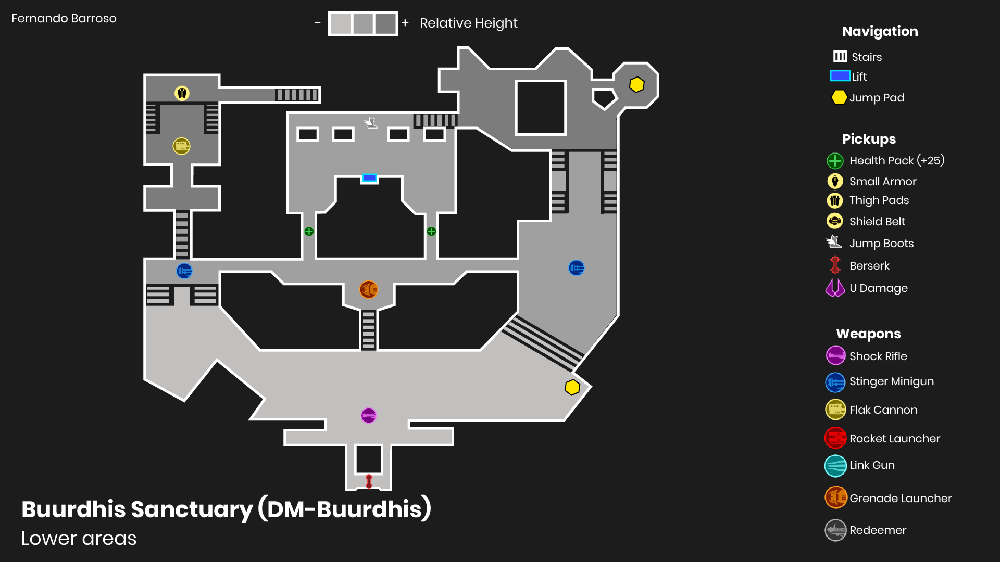

Buurdhis Sanctuary


A medium-sized and massively vertical Deathmatch arena! Will you fight inside the beautiful golden temple or maybe around the twisting path that goes around it?
- Genre: FPS Multiplayer
- Engine: Unreal Tournament Editor
- Language: Unreal Blueprints
- Duration: 3 months
- What did I do: Concept, 2D Layout, Blockout, Iteration process, Art Pass.
Overview and Inspiration
- Unreal Tournament is a first-person arena shooter video game developed by Epic Games. I decided to work on a custom map to develop my multiplayer level design skills.
- The original concept was to feature a dominant, huge temple that stands from the centre of the map and a twisting path that goes around it, from a wooden pier up to the Temple's main entrance.
- I took inspiration from different south-american ancient civilizations such the Maya, Inca, and Aztec societies, and went for the idea of a hidden citadel, similar to the one from "The Road to El Dorado", for the setting.
Blockout evolution
- During development I was lucky enough to have periodic feedback reviews that resulted in constant iteration.
- Apart from being a visual reference, the level started giving almost no relevance to the Temple in terms of gameplay, being the outside path the protagonist instead.
- A few playtests were enough to see that the action was too disperse this way, and soon I realised the potential of hollowing the temple and making it playable. Since then, I worked towards reverting the initial priorities while keeping the original concept in mind.
- The video above shows how some of the main areas evolved over time. I always looked for improving navigation, cutting out superfluous spaces, and allowing for multiple approaches no matter where you are. Overall making it a fun to play map.
Final Layout
- A crucial issue to deal with since the beginning was to give the lower areas the same importance as the higher ones. After all, why would you want to be in the lowground at all when there are so many easy options to be above your enemies?
- Establishing a item and weapon hierarchy helped, but also making them generally safer and shorter that their higher counterparts.
- Finally, the top-down layout ended up like this, which has shown to be quite balanced during playtest sessions:



Art pass
- The level is pretty much in a blocking state (that was the original intention) but still I think I managed to give it some life, identity and an initial art direction through lightning, materials, and some props.
Closing thoughts
- Creating a medium-sized deathmatch level with such a variety of spaces and heights has been quite a challenge, and brought a whole new layer of complexity, as if designing for multiplayer wasn't tricky already.
- That said, the level is far from perfect, and there are certain zones I believe could be simplified more a little bit. Part of the exercise, however, was to know where to stop in order to meet the deadline, and for the time given I'm quite happy with the result!
- All in all, I've learned a lot of multiplayer level design with this project and I'm eager to put this knowledge into a new project soon!